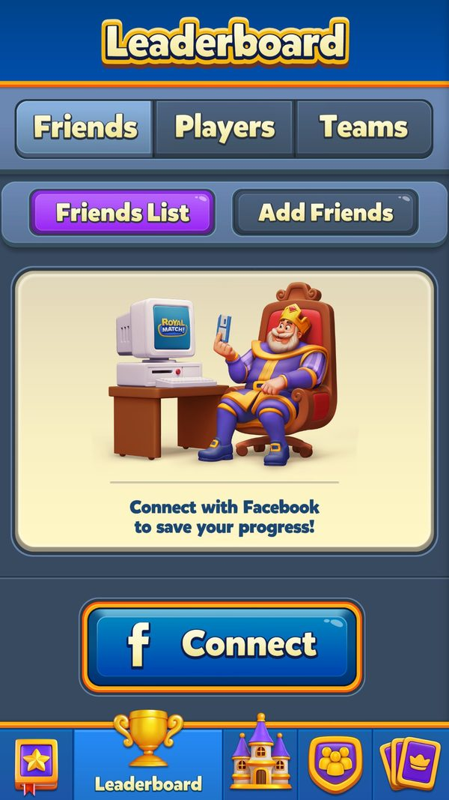
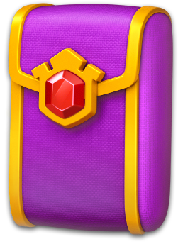

Thi đấu cá nhân: đua, xếp hạng và người chơi ảo
Các giải đấu cá nhân ghép nhóm, tính điểm, dùng người chơi ảo, chống gian lận và trả thưởng theo hạng ra sao?
Bài đi qua 12 giải solo của Royal Match: cách vào giải, cách tính điểm, luật thắng, phần thưởng theo hạng và mức 'thật' của đối thủ. Đọc khoảng 9 phút. Đọc kèm bài Khung sự kiện (vòng đời chung) và Mùa thẻ (gói thẻ gắn vào thưởng hạng).
- ✅ Giá trị thật: lấy thẳng từ code, config server thật, save hoặc ảnh chụp khi chơi.
- 🧪 Ví dụ minh họa: con số đầu vào giả định để thấy cơ chế chạy; cách tính trong ví dụ là cách tính thật trong code.
- Tên kỹ thuật (class, method, key) để trong ngoặc hoặc ở dòng bằng chứng, để tra code khi cần.
Tóm tắt nhanh
- Ba kiểu luật thắng. Xếp hạng khi hết giờ; về đích trước; đối đầu loại trực tiếp.Ví dụ ✅ King's Cup thưởng top 10 khi hết giờ; Sky Race ai vượt 15 level trước thì về nhất; Clash of Champions loại 8 → 4 → 2.
- Nhóm nhỏ, ghép ở server. Client chỉ nhận mã nhóm và danh sách người; quy mô nhóm ghi cứng trong code.Ví dụ ✅ Sky Race 5 người, Daily Lightning Rush tối đa 5, Propeller Rush 3–5, Clash of Champions 8 ghế, Robot Rivals 1 đối thủ.
- Vào giải được tặng mạng vô hạn. Biến mỗi giải thành một 'cửa sổ chơi thả ga'.Ví dụ ✅ King's Cup tặng 30 phút; Daily Lightning Rush tặng đúng thời lượng vòng; Propeller Rush chỉ tặng khi còn ≥ 67% thời gian bước.
- Có người chơi ảo, mức độ khác nhau. Có giải xin bot, có giải nhận 'nhóm giả', có giải không có người thật nào.Ví dụ ✅ Lệnh vào Clash of Champions gửi IsBotRequired = true; lệnh vào Robot Rivals gửi EnterWithBot = true; Lava Quest chỉ nhận Scenario, WinnerCount, StepUserCounts — đối thủ là bạn Facebook hoặc 'khách' sinh ngẫu nhiên.
- Lava Quest chia giải. Coin = thưởng ÷ (số người thắng khác + 1), làm tròn lên bội số 10.Ví dụ 🧪 Thưởng mặc định 10000 C, server báo có 4 người khác cùng về đích → mỗi người 10000 ÷ 5 = 2000 C.
- Thưởng gốc nhỏ, được 'gắn thêm' từ event khác. Mùa thẻ và Train Journey cộng gói thẻ, vé theo hạng.Ví dụ ✅ King's Cup hạng 1: 180 ULV + 3 R/T/L + 4 booster trong màn, cộng thêm 1 CP6 (mùa thẻ) và 50 Tk (Train Journey).
- Chống lạm dụng chặt. Tắt app giữa màn = thua; vòng trước không ghi điểm thì không cho vào lại; giờ cuối không cho vào mới.Ví dụ ✅ Sky Race khoá vào 1 giờ cuối; Archery Arena cần còn > 1 giờ; Robot Rivals khoá 30 phút cuối.
Ví dụ xuyên suốt: một vòng Daily Lightning Rush
✅ Dòng đầu là dữ liệu thật: lệnh vào gửi tay ngày 09/09/2026 bằng tài khoản test (level 8) — server vẫn cho vào nhóm dù client khoá ở level 31 (suy luận: khoá level nằm ở client). 🧪 Các dòng sau giả định một người chơi level 40; số Lightball và nước thừa là giả định, cách tính là thật trong code.
| Lúc | Người chơi làm gì | Game phản hồi | Kết quả / điểm |
|---|---|---|---|
| ✅ 09/09 14:59 UTC | Gửi lệnh vào (Level 8, Step 0) | Server trả vòng 494, config v127, 3 stage × 30 phút, thưởng stage 1 PL / 1 IG / 1 PL + 1 IG; nhóm còn 1.800.000 ms | Nhóm chỉ có 1 người lúc vào |
| 🧪 Vào stage 1 | Bấm Start ở hộp trước màn | Tặng mạng vô hạn bằng thời lượng vòng của người chơi | Chơi không lo hết mạng trong ~30 phút |
| 🧪 Level 1 | Thắng, phá 2 Lightball, dư 6 nước | Tia sét = 2 × 20 + 6 × 5 | +70 → tổng 70 |
| 🧪 Level 2 | Thắng với Super Lightball, phá 1 Lightball, dư 4 nước | Hệ số × 2 khi chơi Super Lightball: (1 × 20 + 4 × 5) × 2 | +80 → tổng 150, gửi điểm lên server |
| 🧪 Level 3 | Thua | Không cộng, không trừ | Vẫn 150 |
| 🧪 Hết 30 phút | — | Hỏi bảng chốt (tối đa 5 lần); thưởng theo hạng lấy từ config người chơi (server, chưa đọc được) | Giả sử về nhất nhóm |
| 🧪 Nhận thưởng | Bấm nhận | Thưởng stage 1 theo v127 (1 PL), mùa thẻ gắn thêm 1 CP3; source 'DLR-1' | Được vào stage 2 (thắng stage trước mới vào tiếp) |
| 🧪 Stage 2 | Vào nhưng không chơi level nào | Cờ 'vòng trước không ghi điểm' bật | Lần sau bị chặn vào cho tới khi thắng 1 level |
| ✅ 10/09 08:00 UTC | — | Vòng 494 hết hạn | Ngày mới, vòng mới |
Điểm rush thưởng cho cách thắng (nhiều Lightball, nhiều nước thừa) chứ không chỉ cho việc thắng. Cửa sổ 30 phút + mạng vô hạn kéo người chơi vào phiên dài liên tục.

Ảnh chụp minh họa (3)
Ảnh chụp từ game thật trên LDPlayer. Bấm ảnh để phóng to, phím ← → để chuyển ảnh.



Luồng hoạt động (16 bước)
Tóm lại: kiểm tra quyền vào → mời vào giải → gửi lệnh vào → server ghép nhóm → tặng mạng vô hạn → chơi level tính điểm → gửi điểm → hết giờ / có người về đích → lấy bảng chốt → nhận thưởng theo hạng → sang bước sau
- 1Kiểm tra quyền vàoClientĐủ level, đã tải bundle, còn đủ giờ.Ví dụ ✅ Sky Race khoá vào 1 giờ cuối; Archery Arena cần còn > 3.600.000 ms; Robot Rivals khoá 30 phút cuối.
SkyRaceManager.get_CanEnterNewRace; ArcheryArenaManager.get_CanSeeNewEvent; RobotRivalsConfigHelper.GetLastEligibleRemainingJoinMinutes - 2Mời vào giảiClientHộp bắt đầu (lần 1, lần 2), hộp nhắc, panel trước màn, hoặc link sâu.Ví dụ ✅ Panel trước màn có cho Sky Race, Lightning Rush, Space Mission, Daily Lightning Rush, Propeller Rush, Robot Rivals, Lava Quest. King's Cup chỉ tự bật hộp bắt đầu 1 lần mỗi giải.
PrelevelPanelType; KingsCupManager.StartDialogMaxShowCount = 1 - 3Gửi lệnh vàoClientClient gửi level và phiên bản config; chặn bấm lặp trong lúc chờ.Ví dụ ✅ Archery Arena gửi {Level, Score, ConfigVersion} — điểm khởi đầu = hệ số chuỗi bậc 0 × số bia đang có. Clash of Champions gửi {Level, ConfigVersion, IsBotRequired, LastEnteredStage}.
facts/runtime/server_fetched/Enter*Request.json; ArcheryArenaManager.TryEnterEvent - 4Server ghép nhómServerServer trả mã nhóm (chứa mã vòng ở bit 48–63, kiểu vào ở bit 46–47; Robot Rivals thêm phân khúc ở bit 32–45) hoặc lý do từ chối.Ví dụ ✅ Archery Arena ở level 8 → LevelNotReached(4); Clash of Champions → EventNotActive(2).
DailyLightningRushManager.ExtractEventIdFromGroupId; RobotRivalsManager.ExtractSegmentFromGroupId; ArcheryArenaFailReason - 5Tặng mạng vô hạnClientMỗi giải một luật tặng.Ví dụ ✅ King's Cup 30 phút; Daily Lightning Rush = thời lượng vòng; Propeller Rush chỉ khi còn ≥ 0,67 thời lượng bước; Clash of Champions theo giờ còn lại của vòng.
KingsCupManager.GiftedUnlimitedLifeTimeMinutes; DailyLightningRushManager.GiveUnlimitedLifeReward; PropellerRushManager.LifeRewardActionThreshold; ClashOfChampionsManager.TryGiveLifeReward - 6Màn chờ đối thủClientHoạt cảnh 'tìm đối thủ'; giải có bot luôn đủ ghế.Ví dụ ✅ Robot Rivals giả lập tìm 2.400 ms; Clash of Champions hỏi lại tối đa 8 lần mỗi 0,6 giây và luôn dựng 8 ghế; Sky Race dưới 3 người thì hỏi lại server; Lava Quest dựng bạn Facebook hoặc 'khách'.
RobotRivalsUIDataHelper.DefaultMatchmakingTimeInMs; ClashOfChampionsLocalData.FillSeatsAndProfiles; SkyRaceManager.CheckPlayerCount; LavaQuestManager.FindingPlayerSceneOpened - 7Chơi level và tính điểmPlayerMỗi giải tính điểm một kiểu.Ví dụ ✅ King's Cup: cúp rơi trong level. Sky Race / Weekly: số level vượt. Space Mission / Lava Quest: thắng liên tiếp. Archery Arena: bia × hệ số chuỗi. Daily Lightning Rush: Lightball × 20 + nước dư × 5 (× 2 với Super Lightball). Robot Rivals: đạn → bắn, sát thương 25 / 20 / 15 theo góc 0 / 5 / 20 độ.
KingsCupManager.CanEarnCups; ArcheryArenaManager.WonLevel; DailyLightningRushLevelData.AddLightningForRush*; robot_rivals_default_config.json - 8Thua levelClientGiải có chuỗi phạt nặng; giải theo điểm chỉ là không cộng.Ví dụ 🧪 Đang chuỗi 4 ở Space Mission, thua 1 level → chuỗi về 0. Đang ở bậc 5 Lava Quest, thua → bị loại. Archery Arena đang hệ số bậc 4 → về bậc 0.
SpaceMissionManager.DecreaseStreak; LavaQuestManager.FailedLevel (FailStep = 9); ArcheryArenaManager.FailedLevel - 9Gửi điểm, cập nhật hạng tạmClientSau level client gửi điểm và tự tính hạng ngay trên máy để UI mượt.Ví dụ ✅ Archery Arena gửi định kỳ mỗi 10 phút (600.000 ms); King's Cup lưu cúp vào bảng Leader loại 7.
ArcheryArenaManager.TrySendUpdateScore; KingsCupManager.UpdateRankLocally; UserLeaderboard.GetMyScore - 10Theo dõi đối thủServerLàm mới bảng có chặn gửi dồn dập; giải đối đầu nhận điểm đối thủ theo thời gian thực.Ví dụ ✅ Clash of Champions chỉ nhận điểm đối thủ cao hơn ('Received lower opponent score'); Robot Rivals nhận báo khi đối thủ tấn công.
ClashOfChampionsManager.OnOpponentScoreUpdated; RobotRivalsManager.OnGroupUpdatedResponseReceived - 11Kết thúc sớm khi có người về đíchServerGiải 'về đích' đóng ngay khi có người đạt mục tiêu.Ví dụ ✅ Sky Race đích 15 level; Space Mission đích 3 / 5 / 7 trận thắng liên tiếp (ai về trước nhận hết thưởng bước); Lava Quest bậc 8 là về đích.
SkyRaceManager.IsRaceFinishedDuringEvent; SpaceMissionManager.AnyPlayerReachedCurrentTarget; LavaQuestProgress.SuccessStep - 12Hết giờ: lấy bảng chốtClientHỏi server bảng cuối, tối đa 5 lần. Weekly giữ riêng config của tuần vừa hết để không tính nhầm.Ví dụ 🧪 Weekly kết thúc thứ Hai 08:00 UTC; tuần mới đã có config khác, nhưng thưởng tuần cũ vẫn tính theo config đã lưu.
PropellerRushManager.EventTimeFinished; WeeklyLeaderboardManager.LoadCachedLastActiveEventConfig - 13Nhận thưởng theo hạngPlayerMỗi giải một bảng thưởng; nguồn ghi theo hạng hoặc bước.Ví dụ ✅ King's Cup chỉ hạng 1–10 ('KC-{hạng}'); Weekly hạng 1–3; Sky Race top 3; Lava Quest coin = thưởng ÷ (WinnerCount + 1), làm tròn lên bội 10.
KingsCupManager.GetKingsCupRewards; WeeklyLeaderboardManager.ClaimEvent; SkyRaceManager.ClaimSkyRace; LavaQuestManager.GetInventoryPackage - 14Không có thưởngClientHạng ngoài vùng thưởng vẫn phải 'đóng' vòng với server.Ví dụ 🧪 King's Cup hạng 14: gửi lệnh đóng không thưởng, được xem bảng chốt; Sky Race thua: tự gửi lệnh đóng nhóm.
KingsCupManager.TrySendClaimForNoReward; SkyRaceManager.SendAutoClaimCommand - 15Sang bước sauClientRush và đối đầu có nhiều bước; thắng bước trước mới vào bước sau, trừ khi A/B cho chơi lại.Ví dụ ✅ Tài khoản test thuộc A/B Propeller Rush 3 bước (id 137, nhóm 3) và A/B cho chơi lại rush (id 192, nhóm 2). Clash of Champions cho chơi lại với thưởng thấp (rlow).
PropellerRushManager.GetStepToEnterClamped; AbTestHelper.AreRushEventsReplayable; ClashOfChampionsManager.ShouldGetLowRewards; ab_tests_runtime.json - 16Đóng vòng, ghi thành tíchClientGửi số liệu kết thúc; hạng 1 các giải lớn được ghi vào hồ sơ.Ví dụ ✅ Hạng 1 King's Cup → OnKingsCupWin; Weekly → OnWeeklyContestWin; League → OnLeagueWin.
KingsCupManager.ClaimKingsCup; WeeklyLeaderboardManager.ClaimEvent; LeagueManager.ClaimLeague
Nhánh & ngoại lệ
| Khi | Thì | Ví dụ | Bằng chứng |
|---|---|---|---|
| Server chưa gom đủ người | Nhóm giả, ghế trống hoặc bot được dùng. | ✅ Sky Race / Space Mission nhận mã nhóm giả -1 (đang vào) và -2 (đã xong); Daily Lightning Rush có thể chạy với nhóm 1 người (đo 09/09). | SkyRaceManager.FakeGroupIdForEnteringEvent; SpaceMissionManager.FakeGroupIdForFinishedEvent; EnterDailyLightningRushRequest.json |
| Vòng trước vào nhưng không ghi điểm (Daily Lightning Rush) | Bị chặn vào lại cho tới khi thắng một level — chống giữ chỗ trong nhóm. | 🧪 Vào stage 2 rồi bỏ đi → lần sau nút vào bị khoá; thắng 1 level thường thì mở lại. | DailyLightningRushManager.CanJoinEvent; DailyLightningRushManager.WonLevel (NoScoreOnLastEvent) |
| Tắt app giữa level ở giải có chuỗi | Bị tính thua; crash thì không. | ✅ Space Mission log 'Game killed in game scene, resetting streak!'. | SpaceMissionManager.CheckIfQuitInGame; LavaQuestManager.WontRestoreLevel; ArcheryArenaManager.CheckIfQuitInGame |
| Bấm nhận mà mất phản hồi | Quà đã vào kho; lần sau gửi lại ngầm. | 🧪 Nhận King's Cup hạng 3 (60 ULV + 2 R/T/L) rồi mất mạng → khoá 'KCCNF' giữ mã nhóm, mở lại thì gửi lại. | KingsCupManager.ClaimNotFinished; SkyRaceManager.SendAutoClaimCommand; SpaceMissionManager.ClaimTimeout |
| Người chơi bị cấm xã hội | Không gửi điểm, không lên bảng của người khác. | 🧪 Tài khoản bị cấm vẫn chơi King's Cup nhưng 9 người khác không thấy tên. | AEventManager.SendScore; EventsHelper.ApplySocialBan |
| Event bị xoá hoặc chưa đủ level | Server trả lý do; client xoá vòng hoặc giữ khoá. | ✅ GetArcheryArenaInfo → EventDeleted(3); GetDailyLightningRushInfo không kèm nhóm → EventIsDeleted(1). | facts/runtime/server_fetched/GetArcheryArenaInfoRequest.json; GetDailyLightningRushInfoRequest.json |
| Bấm icon khi offline | Không mở bảng xếp hạng vì không chắc dữ liệu. | ✅ Archery Arena hiện 'ArcheryArenaOfflineWarning1'. | ArcheryArenaManager.OnClickIcon |
| Điểm Clash of Champions bị khoá | Điểm trong level không tăng nữa (điều kiện chính xác chưa giải mã; suy luận: khi vòng đã ngã ngũ). | 🧪 Đối thủ đã dừng và mình vượt xa → thanh điểm khoá. | ClashOfChampionsProgress.IsScoreLockedIndex |
| Weekly sang tuần mới | Phải 'thấy' một vòng rồi mới được vào vòng sau — tránh vào giữa tuần. | 🧪 Mở game lần đầu vào thứ Năm: tuần này chỉ xem, thứ Hai mới được xếp nhóm. | WeeklyLeaderboardManager.get_FirstSeenEventPassed |
So sánh 12 giải
| Giải | Nhóm / đối thủ | Điểm tính bằng | Thời lượng | Luật thắng | Mở | Ví dụ |
|---|---|---|---|---|---|---|
| King's Cup | nhóm server, thưởng top 10 | cúp | runtime hết thứ Sáu 08:00 | hạng khi hết giờ | 25 | ✅ Vòng 720, đã nhận lúc đo |
| Weekly Leaderboard | 10 người thật (đo 09/09) | level vượt | tuần (~7 ngày, suy luận), hết thứ Hai 08:00 | top 3 | 47 | ✅ Vòng 217, phân khúc 3 |
| League | nhóm server | vương miện | tuần | top 3 coin, hạng 4+ Hammer | 14501 (server) | ✅ Top Players 06/10: 31.290 vương miện |
| Sky Race | 5 người | level vượt, đích 15 | khoá vào 1 giờ cuối | về đích trước, top 3 | 51 | 🧪 Vượt 15 level đầu tiên → hạng 1 |
| Space Mission | nhóm server | chuỗi 3 / 5 / 7 | server | đạt chuỗi trước nhận hết | 51 | 🧪 Thắng 3 liên tiếp trước mọi người → thưởng bước 1 |
| Lava Quest | mô phỏng | thắng liên tiếp 7 bậc | 300.000 ms + hồi 50.000 ms (mặc định) | sống tới bậc 8, chia giải | 66 | 🧪 5 người về đích → 2000 C mỗi người |
| Daily Lightning Rush | tối đa 5 | Lightball × 20 + nước dư × 5 | 30 phút × 2–3 stage | hạng trong nhóm (thưởng hạng: server) | 31 | 🧪 2 Lightball + 6 nước dư = 70 |
| Propeller Rush | 3–5 người | propeller tạo ra | 2–3 bước × 20/30 phút | hạng trong nhóm | 96 | ✅ A/B tài khoản: bản 3 bước |
| Robot Rivals | 1 vs 1 (có thể là bot) | đạn → sát thương | khoá 30 phút cuối | hạ 100 máu robot đối thủ | 51 | 🧪 4 phát trúng giữa (25) = 100 → thắng |
| Archery Arena | nhóm server + phân khúc | bia × hệ số chuỗi | cần còn > 1 giờ | hạng + mốc cá nhân | 55 (vào 57) | 🧪 Chuỗi 4 trận → hệ số bậc 4 (giá trị server) |
| Clash of Champions | 8 ghế, có bot | điểm thao tác trong level | 3 vòng (server) | loại 8 → 4 → 2 | 96 | 🧪 Thua vòng tứ kết → bị loại |
| Royal World Cup | 100 quốc gia | golden ball × hệ số vòng loại 5/3/2/1 | nhiều vòng | loại trực tiếp + bậc knockout | 60 | ✅ Knockout bậc 20: 500 GB |
Người chơi ảo và độ 'thật' của đối thủ
Tóm lại: danh sách người do server gửi → client không có cờ 'bot' → chỉ thấy bot khi gói tin hoặc logic lộ ra
Lava Quest là cuộc thi có kịch bản. Gói nhóm Lava Quest chỉ có Scenario, WinnerCount, StepUserCounts và ScenarioId, không có danh sách người. Đối thủ hiển thị là bạn Facebook hoặc 'khách' sinh bằng bộ ngẫu nhiên + bảng chữ cái trong client; số người rơi mỗi bậc theo kịch bản server. Chỉ kết quả của chính người chơi là thật (suy luận từ cấu trúc gói tin).
| Giải | Cơ chế | Mức độ thật | Ví dụ |
|---|---|---|---|
| Weekly Leaderboard | Danh sách người thật | Thật | ✅ 09/09: 10 người, tên/đội/Facebook đa dạng (aaa 23 điểm, '200' đội Kropotkin 14, Svetlana đội Family 13…) |
| King's Cup, Archery Arena, Daily Lightning Rush, Propeller Rush | Danh sách do server, không có cờ bot | Không xác định (server) | ✅ Nhóm Daily Lightning Rush lúc vào chỉ có 1 người |
| Sky Race | Nhóm giả khi chưa gom đủ; xin lại nếu dưới 3 người | Có nhóm tạm/giả | ✅ Mã nhóm giả -1 |
| Space Mission | Nhóm giả -1/-2; logo đội đối thủ gán ngẫu nhiên rồi giữ cố định | Người thật, trang trí giả | ✅ OpponentFakeTeamLogoIds lưu cặp userId,logoId |
| Robot Rivals | Client xin bot đối thủ (EnterWithBot) và bot đồng đội (AddBotPartner) | Có bot | ✅ Thống kê rr_robot_count đếm số robot mỗi ván |
| Clash of Champions | Luôn đủ 8 ghế; client xin server nhét bot | Có bot | ✅ Lệnh vào thật gửi IsBotRequired = true |
| Lava Quest | Không có người thật trong gói tin | Mô phỏng hoàn toàn | ✅ LavaQuestUserGroupInfo chỉ có 4 trường kịch bản |
Thưởng theo hạng / bước
Cột 'Gói thẻ' (mùa thẻ v305, runtime) và 'Vé Train Journey' (config mặc định) là phần các event khác gắn thêm khi chúng đang chạy.
- King's Cup có nhánh A/B giảm thưởng booster.Ví dụ ✅ Nhóm {2, 4} hạng 1 chỉ còn 180 ULV + 1 R + 1 T; nhóm {3, 5, 6} hạng 1 = 180 ULV + 1 R + 1 T + 1 L + 10 UH + 10 UJ.
- Weekly cũng có A/B giảm thưởng.Ví dụ ✅ A/B 183/184; giá trị giảm (server, chưa đọc được).
- Propeller Rush mã hoá bước theo 'kiểu nhóm × 10 + bước' (suy luận).Ví dụ ✅ Gói thẻ: 21, 31, 42, 52 → CP3; 22, 32, 43, 53 → CP4; 41, 51 → CP2.
| Giải / hạng | Thưởng gốc | Gói thẻ | Vé Train Journey |
|---|---|---|---|
| King's Cup hạng 1 |  ∞180 phútUnlimited Lives ∞180 phútUnlimited Lives  3Rocket 3Rocket  3TNT 3TNT  3Light Ball 3Light Ball  1Royal Hammer 1Royal Hammer  1Cannon 1Cannon  1Jester Hat 1Jester Hat |  1Card pack 6 |  50Ticket 50Ticket |
| King's Cup hạng 2 | ∞120 phútUnlimited Lives 2Rocket 2TNT 2Light Ball 1Royal Hammer 1Jester Hat |  1Card pack 4 1Card pack 4 | 20Ticket |
| King's Cup hạng 3 | ∞60 phútUnlimited Lives 2Rocket 2TNT 2Light Ball |  1Card pack 3 1Card pack 3 | 10Ticket |
| King's Cup hạng 4–10 | 1Rocket 1TNT 1Light Ball | 1Card pack 2 | – |
| Sky Race hạng 1 | ∞60 phútUnlimited Lives 1Royal Hammer 1Rocket 1TNT 1Jester Hat 1Cannon 1Light Ball | 1Card pack 4 | 30Ticket |
| Sky Race hạng 2 | ∞30 phútUnlimited Lives 1Royal Hammer 1TNT 1Rocket 1Light Ball | 1Card pack 3 | 20Ticket |
| Sky Race hạng 3 | 1Royal Hammer 1TNT 1Rocket | 1Card pack 2 | 10Ticket |
| Weekly hạng 1 | 2Rocket 2TNT 2Light Ball 2Royal Hammer 2Cannon 2Jester Hat |  1Guaranteed card pack 1Guaranteed card pack | – |
| Weekly hạng 2 | 1Cannon | 1Card pack 4 | – |
| Weekly hạng 3 | 1Royal Hammer | 1Card pack 3 | – |
| Space Mission bước 1 (chuỗi 3) | 1Royal Hammer 1Jester Hat ∞15 phútUnlimited Lives ∞15 phútUnlimited TNT | 1Card pack 2 | – |
| Space Mission bước 2 (chuỗi 5) | ∞30 phútUnlimited Rocket ∞30 phútUnlimited Lives ∞30 phútUnlimited TNT ∞30 phútUnlimited Light Ball 1Cannon | 1Card pack 3 | 10Ticket |
| Space Mission bước 3 (chuỗi 7) | 1Royal Hammer 1Rocket ∞30 phútUnlimited Lives 1TNT 1Cannon 1Light Ball 1Jester Hat | 1Card pack 4 | 20Ticket |
| Daily Lightning Rush / Propeller Rush / Robot Rivals bước 1 | 1Prelevel boosters | DLR 1 CP3 · RR 1 CP2 | – |
| … bước 2 | 1All in-game boosters | DLR 1 CP4 · RR 1 CP3 | – |
| … bước 3 | 1Prelevel boosters 1All in-game boosters | DLR 1 CP4 · RR 1 CP4 | – |
| Lava Quest về đích | 10000 C chia (WinnerCount + 1) | – | – |
| Clash of Champions kết thúc | r / rlow / wb (server) | 1Card pack 4 | – |
Đính chính: bảng điểm Clash of Champions vẫn chưa có
magic-duke-config không phải bảng điểm Clash of Champions. GDD cũ coi đó là bảng điểm CC. Thực tế đó là config thanh nạp của tính năng Magic Duke (mở ở level 402): tạo TNT +10, Rocket +5, Propeller +5, combo TNT-TNT +40…, đầy 200 điểm (hoặc 150 tuỳ A/B) thì Duke ném special item. Hệ số điểm thật của CC vẫn là (server, chưa đọc được).
Số liệu chính
| Chỉ số | Giá trị | Số liệu do | Nguồn |
|---|---|---|---|
| Người mỗi nhóm Sky Race / Daily Lightning Rush / Propeller Rush | 5 / 5 / 3–5 | Client | SkyRaceManager.PlayerCount; DailyLightningRushManager.MaxUserCount; PropellerRushManager.MinPlayerCountToWait / MaxUserCountWhenUserInEvent |
| Ghế Clash of Champions | 8 (3 vòng) | Client | ClashOfChampionsLocalData.FillSeatsAndProfiles |
| Mạng vô hạn khi vào King's Cup | 30 phút | Client | KingsCupManager.GiftedUnlimitedLifeTimeMinutes |
| Ngưỡng tặng mạng Propeller Rush | còn ≥ 67% thời lượng bước | Client | PropellerRushManager.LifeRewardActionThreshold = 0.67 |
| Điểm Daily Lightning Rush | Lightball × 20, nước dư × 5, × 2 với Super Lightball | Client | DailyLightningRushLevelData |
| Nhóm Daily Lightning Rush khi vào | 30 phút, 1 người | Đo trên máy | facts/runtime/server_fetched/EnterDailyLightningRushRequest.json (09/09) |
| Nhóm Weekly Leaderboard | vòng 217, phân khúc 3, 10 người thật | Đo trên máy | facts/runtime/server_fetched/EnterWeeklyLeaderboardRequest.json (09/09) |
| Công thức chia giải Lava Quest | thưởng ÷ (WinnerCount + 1), làm tròn lên bội 10 | Client | LavaQuestManager.GetInventoryPackage |
| Hạng có thưởng King's Cup | 1..10 | Client | KingsCupManager.MinRewardedRank |
| Vương miện hạng 1 bảng Players | 31.290 (level 14701) | Đo trên máy | screenshots/leaderboard_players.jpg (06/10) |
Đánh giá
Thang 1–5 (với tiêu chí rủi ro, 5 = rủi ro cao). Trung bình: 3.3.
| Tiêu chí | Điểm | Nhận xét |
|---|---|---|
| Lý do quay lại | 5/5 | Rush 20–30 phút, rush ngày, King's Cup giữa tuần, Weekly cả tuần chồng nhau; mạng vô hạn lúc vào kéo phiên dài. |
| Công bằng cảm nhận | 3/5 | Nhóm 5 người, thưởng top 3–10 nên dễ có quà; nhưng bot và Lava Quest mô phỏng có thể bị chỉnh 'vừa đủ thắng/thua'. |
| Minh bạch | 2/5 | Không có dấu hiệu bot trong UI; Lava Quest dựng hoạt cảnh đối thủ rơi xuống nham dù không có người thật. |
| Sức ép chơi liên tục | 4/5 | Giải chuỗi phạt nặng khi thua (Space Mission về 0) và cấm tắt app né thua. |
| Dễ vận hành | 2/5 | Mỗi giải có lệnh vào / gửi điểm / lấy bảng / nhận riêng; ghép nhóm, bot, phân khúc đều ở server. |
| Rủi ro | 4/5 | Điểm do client gửi; đỉnh tải khi hết giờ; rủi ro truyền thông nếu lộ đối thủ ảo. |
- Nhóm nhỏ + thưởng top 3: chơi chăm gần như chắc có quà.
- Mạng vô hạn lúc vào biến giải thành phiên chơi dài.
- Bốn kiểu luật (hạng, về đích, đối đầu, sinh tồn) giữ cảm giác mới dù cùng match-3.
- Bảng thưởng King's Cup ghi cứng trong client.
- Nhiều giải gần trùng nhau (Daily Lightning Rush vs Propeller Rush; Sky Race vs Space Mission) nên phải tách bằng khe.
- Bot và mô phỏng làm giảm giá trị 'thắng người thật'.
- Lộ kịch bản Lava Quest / bot ảnh hưởng uy tín cả mảng thi đấu.
- Mạng vô hạn phát dày có thể ăn vào doanh thu bán mạng (suy luận).
- Nếu dùng bot lấp nhóm, giới hạn tỷ lệ bot (ví dụ ≤ 2/5 ghế) và cho bot ghi điểm theo phân phối người thật cùng phân khúc.
- Đưa bảng thưởng theo hạng lên config server ngay từ đầu, đừng ghi cứng như King's Cup.
- Tặng mạng vô hạn có điều kiện thời gian như Propeller Rush (≥ 67%) để tránh vào phút chót chỉ để lấy mạng.
- Theo dõi tỷ lệ nhóm chỉ 1 người (như Daily Lightning Rush ngày 09/09); nhóm vắng thì gộp muộn hoặc lấp bot có kiểm soát.
Liên quan
King's Cup Weekly Leaderboard Royal League Sky Race Space Mission Lava Quest (LQ) Daily Lightning Rush Propeller Rush (PR) Robot Rivals (RR) Archery Arena Clash of Champions (CC) Royal World Cup (RWC) Bảng xếp hạng (Leaderboard) Super Duke và Magic Duke 📊 Khung sự kiện: một event sống thế nào từ lúc server gửi tới lúc đóng 📊 Bản đồ toàn bộ event: loại gì, mở lúc nào, chạy theo nhịp nào 📊 Event đội và hợp tác: Team Battle, Team Treasure, Team Tournament, Dragon Nest, Train Journey 📊 Mùa thẻ (Seasonal Card Collection): gói thẻ, thẻ trùng và sợi dây nối mọi event 📊 Madness (Book of Treasure / Propeller Madness) và các lớp nhân điểm sự kiện 📊 Kinh tế liên event: một level thắng nuôi bao nhiêu thanh tiến độ 📊 Kiếm tiền trong màn: Play On, booster, mạng, quảng cáo
Nguồn đã đọc
gdd/KingsCup.jsongdd/WeeklyLeaderboard.jsongdd/League.jsongdd/SkyRace.jsongdd/SpaceMission.jsongdd/LavaQuest.jsongdd/DailyLightningRush.jsongdd/PropellerRush.jsongdd/RobotRivals.jsongdd/ArcheryArena.jsongdd/ClashOfChampions.jsongdd/RoyalWorldCup.jsongdd/SuperDuke.jsonfeatures/MagicDukeManager.mdfacts/runtime/fake-players.mdfacts/runtime/server_fetched/EnterDailyLightningRushRequest.json, EnterWeeklyLeaderboardRequest.json, EnterClashOfChampionsRequest.json, EnterRobotRivalsRequest.json, EnterArcheryArenaRequest.json, GetKingsCupInfoRequest.jsonfacts/runtime/server_configs/PingResponse_SeasonalCardCollectionInfo_Config_v305.json (eventRewardOverrideConfigs)facts/runtime/server_configs/ab_tests_runtime.jsonfacts/fb_schema.json (LavaQuestUserGroupInfo, RobotRivalsGroupInfo, ClashOfChampionsGroupInfo)LavaQuestManager.GetInventoryPackage (gd_condense)Resources/train_journey_default_config.json (eventRewardOverrideConfigs)feature_extras.json + screenshots/ (đo trên máy 06/10/2026)